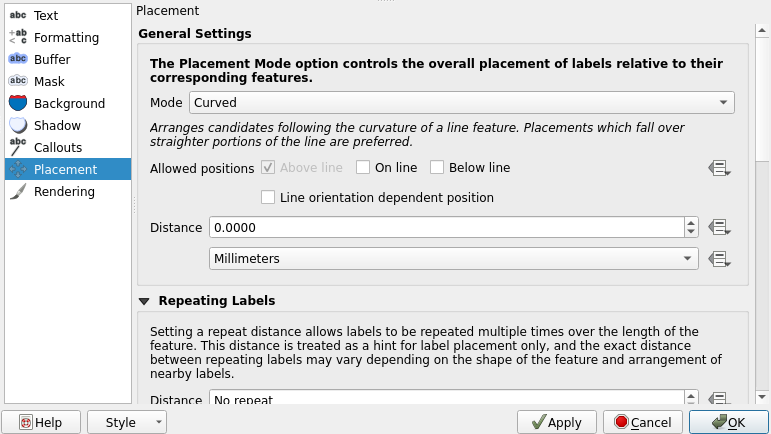
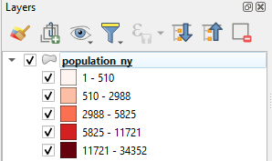
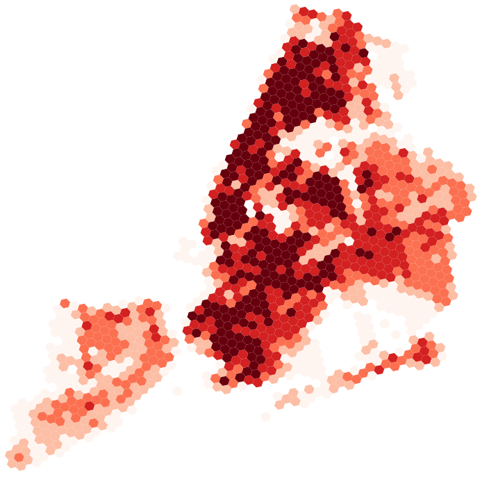

5 Exercise 4: Labeling and classifying geographic data
5.1 Exercise content
This exercise familiarizes you to labeling and classifying data sets.
5.2 The goal of the exercise
After this exercise you can create labels for different datasets and classify data with QGIS.
5.3 Preparations
Open a new QGIS project (Project > New) and save it as “QGIS-exercise 4”. Add the following data to the project:
..course_directory/harvard_map_collection/berlin_1920.tif
..course_directory/geofabrik/berlin_placenames.shp
..course_directory/geofabrik/berlin_roads.shp
..course_directory/geofabrik/berlin_water.shp
..course_directory/kontur/population_crete.gpkg
..course_directory/copernicus/DEM_greece.tif
In QGIS, it is possible to add labels to your map features. Open the Properties of the layer berlin_placenames. Choose Single Labels and from the drop-down menu below select the field that contains the name information (name).Press Apply and the labels appear in the map view.
5.4 Label settings
There are many ways to further customize how our labels appear on the map. Below are short descriptions of the ways labels can be customized in QGIS:
Text |
General text settings: the font, color, and size of text, for example |
Formatting |
You can form multiline texts, center your labels and format numbers. |
Buffer |
You can highlight your labels by generating buffers around them. |
Background |
You can draw a shape to act as a background behind the text. |
Shadow |
You can generate a shadow for the text. |
Placement |
Settings related to text basement in relation to the map feature |
Rendering |
You can configure scale limits and other settings related to the visibility of the texts |
5.5 Styling label texts
You can specify the font, color, and size of your label texts. Try different text styles and experiment with adding shadows to the labels. Adding shadows can help the map viewer distinguish the labels from other map features. Select the Shadow tab and check the Draw drop shadow box. Press Apply to see your changes. Try editing the Offset, Blur radius, Opacity, and Color settings too. You can see the effects on the map or in the Sample text field.
Buffers are another useful tool for highlighting texts. Select the Buffer tab and configure a buffer you like by checking the font, color, and size of text Draw text buffer box. Try different colors and sizes and change the opacity too.
Now open the Placement tab. The default setting should be Around Point, which means QGIS automatically finds a spot around the map feature where the label fits. Try choosing Offset from Point. Notice that all labels are now drawn strictly at the same position in relation to the map features. From the Quadrant selector, select the top middle quadrant and press OK. Notice how all labels are now horizontally centered.

The result might seem a bit cluttered, especially if your map view is zoomed out. Zoom a bit closer so the labels are clearly visible and think about other possible cases where adding labels to a map would make sense. Navigate back to the Placement tab and scroll down to Priority. Set it to high in order to have the labels always appear on top of other map features and their labels. This way you can set the order in which you want the labels of different layers to appear on the map. Press OK.
Psst! When dealing with polygon features, a useful way to limit the amount of labels is to set labels only for features above a certain size threshold. This can be done by selecting Rendering > Suppress labeling of features smaller than
5.6 Labeling line layers
Just like we did earlier with a point layer, labels can be set to all other types of vector layers too. Let’s set labels for a line layer: Open the properties of the berlin_roads layer and set labels on like we did earlier. Lets label each road with its speed limit information. Select the maxspeed field as the label value. In the Placement tab, set the mode to Curved. Press Apply, wait a few seconds and see the changes. Check the example settings below:

Now the labels follow the road lines. You can further customize the curving of the labels by customizing the Maximum angle between curved characters option in the Placement tab. Now you can close the Properties window by pressing OK.

5.7 Classifying vector data
Let's first focus on the population_crete data set, so hide all other layers. The population_crete data set haspopulation data aggregated to a hexagonal grid in GeoPackage format. Take a look at the attribute table of the data (Right-click the layer in the Layers Panel andselect Open Attribute Table). QGIS opens an attribute table window that showcases the attributes of the layer features. The attribute table is an essential part of any vector data set and all vector data sets have one.

Taking a look at the attribute table is necessary to understand the data. Another important resource is the metadata of the data set. Metadatais often found on the data provider's web pages or on other interfaces meant for discovering geographic data sets. Metadata usually tells us for example who the data producer is, for what purpose the data is, in what scale the data is, and what the native coordinate reference system of the data is.
The population_crete data set is actually only a small portion of a global population dataset produced by Kontur. You can find the metadata of the data here: https://data.humdata.org/dataset/kontur-population-dataset. Open the link, select the metadata tab and see how the data set has been made (read the methodology section).
With the metadata we now know that the population values in the data are based on multiple data sources, and, while proven to be accurate, they still are only estimations. We also know that the estimation is from the year 2020. All this is important information to know. It is also common that the field names in an attribute table are not self-explanatory (abbreviations or codes) and thus the contents of the fields could be hard to understand with the attribute table alone. Metadata helps in this regard too as most data sets with multiple field names have the field names explained in the metadata.
It is vital to understand your data before you start working with it. Now that we do, we can for example decide that we want to produce a thematic map that showcases the population distribution of the island of Crete. With a thematic map the data is much clearer to interpret and we can more easily choose appropriate settings for the visualization. Let's start the process of creating a thematic map by opening the Layer Properties and setting the layer's Symbology to Graduated. In the Value drop-down menu, select which field you want to base your classification on (population in this case). Also set the Color ramp, Mode andthe number of Classes as shown below:

Press Classify once you have set the aforementioned settings. Now the classes show up in the classes section. You can manually edit the value breaks of the classes by double-clicking the contents of the Values column or the class names by double-clicking the contents of the Legend column. The legend names of the classes are visible in the Layers Panel and in the legendof a print layout. Press Apply to see the changes on the map. A thematic map should appear in the map view:


If the classes are not visible in your Layers Panel,press the small arrow on the left side of the layer name and the class names should appear below the layer as shown above. Now go back to the Symbology settings and try Mode > Equal Interval. You can delete the existing classes by pressing Delete All and then create new ones by pressing Classify. Try also changing the number of classes, the classification modes and the colors until you find a setup that you think is appropriate. You can compare different classification modes and the distribution of your data with the Histogram. The histogram has its own tab which is located right next to the classes tab. Press Load values to see your data and value breaks in the histogram.

We can also customize the symbol style. Open the Properties of the layer andclick the color bar of the Symbol section as shown below:

The Symbol Settings window opens. Select the Simple fill symbol layerand either set the Stroke color to transparent or Stroke style to No pen. Press OK and OK. Zoom around the map to see the results and return to the symbology settings if you want to make more changes.

Psst! Always save your project file at the end of the exercise.
5.8 Bonus: Classifying raster data
Set the DEM_greece raster visible and hide all other layers. DEM_greece is a part of a europe-wide digital elevation model (DEM) and it is produced by Copernicus (more info: https://land.copernicus.eu/imagery-in-situ/eu-dem). As the name suggests, this particular data set covers mostly Greece. If the data opens up in an unknown coordinate reference system (CRS), set the layer's CRS to EPSG:3035. Remember to also check that the project CRS is EPSG:3035. By default the elevation model will look like this:

Notice that QGIS detected that the data contains continuous values and visualized them with a single gray band. Already with the default style you can perceive the relief of the area. You can even see some lower islands between Greece and Turkey (area framed with red):

Open the layer's Symbology settings and notice that the menu looks different from the symbology settings of a vector layer. Try switching the singleband grey to Singleband pseudocolor. You can also experiment with the hillshade effect.

Now zoom into the archipelago that was earlier indicated by the red rectangle. Notice that while you definitely can see the islands, it would be quite hard to confidently tell which one of them is the highest or what kind of relief they have, for example.
Let's reclassify the data in a way that we get a more detailed view of the islands specifically. Set the scale to 1:500 000 (In the bottom bar of QGIS) and center the map onto the islands in the red rectangle. In the Symbology settings, open the Min/Max Value Settings and edit the settings so that the visualization uses the Min/Max values and Statistics Extent is set to Current canvas. See the example settings below:
Then press Apply, classify the values again and finally press OK.
On the left picture the archipelago is visualized with just pseudocolours and no reclassification. On the right the same area is visualized after being reclassified so that only the elevation values within the current map view are taken into account. You can also test different classification modes and zoom levels to see how they affect the view. For example, try viewing the entire data with the Quantile mode - it shows the relief and especially the shorelines even more distinctively.
Once you are done, save the project file into the course directory either by selecting Project > Save from the menu bar or by pressing CTRL + S.
5.9 Bonus: Label rendering
Zoom the map view so that you can see the whole data set by clicking Zoom Full . Wait for the labels to appear and notice how there are way too many of them on the map. Now, open the Properties of berlin_placenames and choose Labels from the side bar. Select the Rendering tab, checkthe Show all layers for this layer (including colliding labels) box and press Apply. Wait for the labels to appear. Notice that by default QGIS does not draw labels that would collide.
Now the map view is even more cluttered. Let’s fix this by setting scale dependent visibility to our labels. Start with the berlin_placenames layer. Enable Scale dependent visibility in the Rendering tab and set the minimum to 1:100 000. Press OK. The place name labels are now visible only when the map is zoomed closer than 1:100 000 scale. Do the same to the labels of the berlin_roads layer, but set the minimum scale to 1:30 000.

5.10 Advanced labelling
You can also try the more advanced label settings on the berlin_placenames layer. You can configure your label texts based on expressions with QGIS’ Expression Dialog tool. You can access the tool pressing the button next to the Value drop-down menu:

Let’s form labels that combine information from multiple fields. Open the Expression Dialog with the button shown above. The Expression Dialog tool opens.

Expressions are a powerful tool in QGIS and they can, in addition to labelling, be used for many other purposes as well. Currently the Expression field contains the name field because we chose the name field earlier in the Value drop-down menu. In our data there is also a field called fclass that contains information about the type of place. Let’s form an expression that combines the place name and type.
Type the following expression into the Expression field:
“name” || ‘’ || “fclass”
In addition to the field names (name and fclass)the expression contains a line break symbol ‘\n’ and two || signs that concatenate character strings into one text.

Psst! You can add symbols to your expressions with the buttons below the expression field. Similarly, you can add fields to your expression by expanding the fields and values list and double-clicking the field names.
Form the aforementioned expression and press OK. Click Apply in the Layer Properties window and see your new two-part labels on the map. You may need to zoom in first.